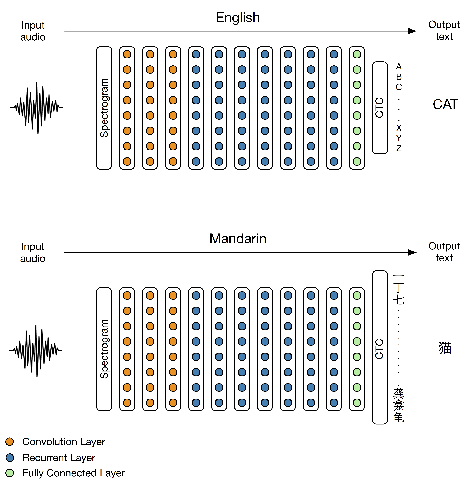

At SVAIL, our mission is to create AI technology that lets us have a significant impact on hundreds of millions of people. When we did the original Deep Speech work [6] in English, it became clear that the shortest path to achieving our mission would be to get the system working in Mandarin Chinese. In our recent paper [1], we showed our results in Mandarin. In just a few months, we had produced a Mandarin speech recognition system with a recognition rate better than native Mandarin speakers. The biggest change we had to make for our Deep Speech system to work in Mandarin was increasing the size of our output layer to accommodate the larger number of Chinese characters (see figure 1). Here we want to discuss what we did to adapt the system to Mandarin and how the end-to-end learning approach made the whole project easier.

Chinese is considered one of the hardest widely spoken languages for English speakers to learn for several reasons [7]. First, unlike English, Mandarin is a tonal language. This means that changes in pitch actually convey different words, rather than just intentions as in English. Secondly, the language has more than 20,000 different characters, around 6,000 of which are commonly used [10]. Thirdly, the writing system doesn’t use spaces to delimit different words.
Traditional speech recognition systems have many components that are necessary to achieve good accuracy with small training data sets. But the complexity of these systems exacerbates the challenges of adapting a speech recognition system to Mandarin. The end-to-end approach used in Deep Speech allowed us to achieve state-of-the-art results quickly with a minimal amount of effort geared towards domain specific adaptation. Below we cover how our end-to-end approach helped us deal with these problems.
Traditional speech recognition systems first convert the raw audio signal into audio features such as mel-frequency cepstral coefficients (MFCCs) in order to preserve and amplify the speech related information in the audio signal while reducing the input dimension [3]. These features suppress some of the pitch information that is unimportant for recognizing words in English but essential for tonal speech recognition. Researchers adapting the system to a tonal language like Mandarin may need to add new features containing pitch information to get good performance [9, 11].
Deep Speech doesn’t use specialized features like MFCCs [1]. We train directly from the spectrogram of the input audio signal. The spectrogram is a fairly general representation of an audio signal. The neural network is able to learn directly which information is relevant from the input, so we didn’t need to change anything about the features to move from English speech recognition to Mandarin speech recognition.
Traditional speech recognition systems use the audio input features to predict abstract units of sound known as phonemes. Before training begins, researchers come up with a mapping from each of the words in their vocabulary to sequences of phonemes. This mapping is known as a lexicon. Usually linguists build the lexicon by agreeing on the phonetic representation of a core set of words. To augment the size of the vocabulary, a statistical model or rule-based system can also be used to estimate the phonetic representation of other words [8]. These phonemes are then aligned in time with short 10 millisecond frames of audio in an iterative training process. When switching to a new language with a traditional speech recognition system, a whole new lexicon must be hand crafted. In the case of Mandarin, the phonemes will contain tone information, and word segmentation may be necessary (see section 2.3) [11].
With the Deep Speech network, constructing a new lexicon in Mandarin is unnecessary. Deep Speech uses a deep recurrent neural network that directly maps variable length speech to characters using the connectionist temporal classification loss function [4]. There is no explicit representation of phonemes anywhere in the model, and no alignment needs to be done. This saves us a great deal of work and language specific adaptation that would require knowledge of Mandarin linguistics.
Both traditional speech recognition systems and Deep Speech use a language model. A language model is used to estimate how probable a string of words is for a given language. The most common language model used in speech recognition is based on n-gram counts [2]. Speech recognition systems, including our Deep Speech work in English [1], typically use a large text corpus to estimate counts of word sequences. The writing system in Mandarin doesn’t delimit words using spaces. In order to use language models in the same way when switching to Mandarin, an extra word segmentation step would need to be included. However, the word segmentation of a string of characters is vague and not clearly defined; there is no widely accepted word segmentation standard.
To avoid these problems when switching to Mandarin, we used a character based N-gram model rather than a word based one. Because there are many characters in a word, a character based N-gram model cannot capture the same long-term dependencies as a word based model of the same size. However, because Deep Speech predicts characters directly, it is learning a language model of its own. In theory it can model the long-term dependencies of language and doesn’t necessarily need a language model. We have found that adding a character based language model is still beneficial, however the network does well without any language model at all. The use of character based model saves us the segmentation step required to move to languages that do not denote words with spaces.
Despite the lack of hand tuned features or language specific components, our best Mandarin Chinese speech system transcribes short voice-query like utterances better than a typical Mandarin Chinese speaker. To benchmark against humans we ran a test with 100 randomly selected utterances and had a committee of five humans label all of them. The human committee had an error rate of 4.0% as compared to the speech system's performance of 3.7%. We also compared a single human transcriber to the speech system on 250 randomly selected utterances. In this case the speech system performs much better: 5.7% for the speech model compared to 9.7% for the human transcriber [1].
Below are two examples of utterances that a human usually cannot correctly transcribe. Once someone reads the transcription from our Deep Speech system, it typically becomes clear what the speaker is saying.
The fact that the network is better than a human on this task is important because it suggests directions for future research. We may be nearing the limits of improvement on this particular data, but humans will still almost certainly outperform Deep Speech on a broader set of speech data with different noise characteristics. This is especially true if humans are allowed to exploit contextual information. This suggests that work on the robustness of speech recognition systems to changes in background noise and the integration of more contextual information will be important in the future.
While working on Deep Speech 2, we explored architectures with up to 11 layers including many bidirectional recurrent layers and convolutional layers, as well as a variety of optimization and systems improvements. All of these techniques are discussed in detail in our paper [1].
An important pattern developed during our exploration: both the architecture and system improvements generalized across languages. Improvements in one language nearly always resulted in improvements in the other. Examples of this trend can be seen in tables 1 and 2 taken from our paper [1]. This means that even though we explored a variety of different architectures, system improvements, and optimization tricks while working on Mandarin, these improvements were to speech recognition in general, rather than ones specific to Mandarin. Given the large differences between English and Mandarin, this suggests that these improvements would hold for other languages as well.
| Language | Architecture | Dev no LM | Dev LM |
| English (WER) | 5-layer, 1 RNN | 27.79 | 14.39 |
| English (WER) | 9-layer, 7 RNN | 14.93 | 9.52 |
| Mandarin (CER) | 5-layer, 1 RNN | 9.80 | 7.13 |
| Mandarin (CER) | 9-layer, 7 RNN | 7.55 | 5.81 |
| Language | Architecture | CPU CTC Time | GPU CTC Time | Speedup |
| English | 5-layer, 3 RNN | 5888.12 | 203.56 | 28.9 |
| Mandarin | 5-layer, 3 RNN | 1688.01 | 135.05 | 12.5 |
It is a well-worn adage in the deep learning community at this point that a lot of data and a machine learning technique that can exploit that data tends to work better than almost any amount of careful feature engineering [5]. We find the same thing here, with deeper models working increasingly well. However, the lack of feature engineering in end-to-end deep learning has other advantages. A big of advantage Deep Speech is that we need little domain specific knowledge to get the system to work in a new language.
Time spent on a machine-learning problem roughly falls into the following three categories: getting data, developing algorithms, and training models. One of the reasons deep learning has been so valuable is that it has converted researcher time spent on hand engineering features to computer time spent on training networks. The end-to-end learning approach for speech recognition further reduces researcher time. GPUs have added so much value because they have reduced the training time. The systems work our team has done to speed up neural network training has further reduced that. We can now train a model on 10,000 hours of speech in around 100 hours on a single 8 GPU node. That much data seems to be sufficient to push the state of the art on other languages. There are currently about 13 languages with more than one hundred million speakers. Therefore we could produce a near state-of-the-art speech recognition system for every language with greater than one hundred million users in about 60 days on a single node.
Collecting such data sets could be very difficult and prohibitively expensive. However, our results suggest the existence of a universal architecture for speech recognition for all languages. If this is true, technologies like transfer learning will become an even more important research direction to recognize all the world’s languages.